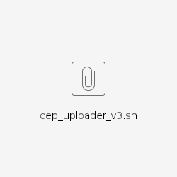
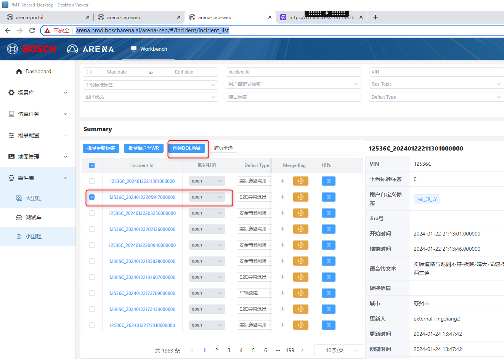
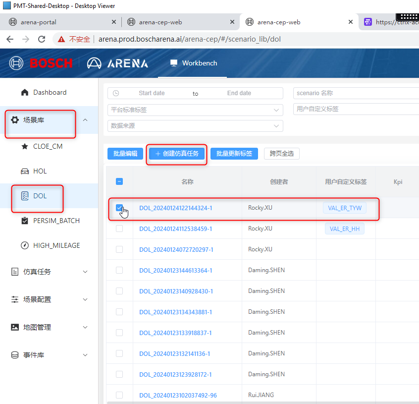
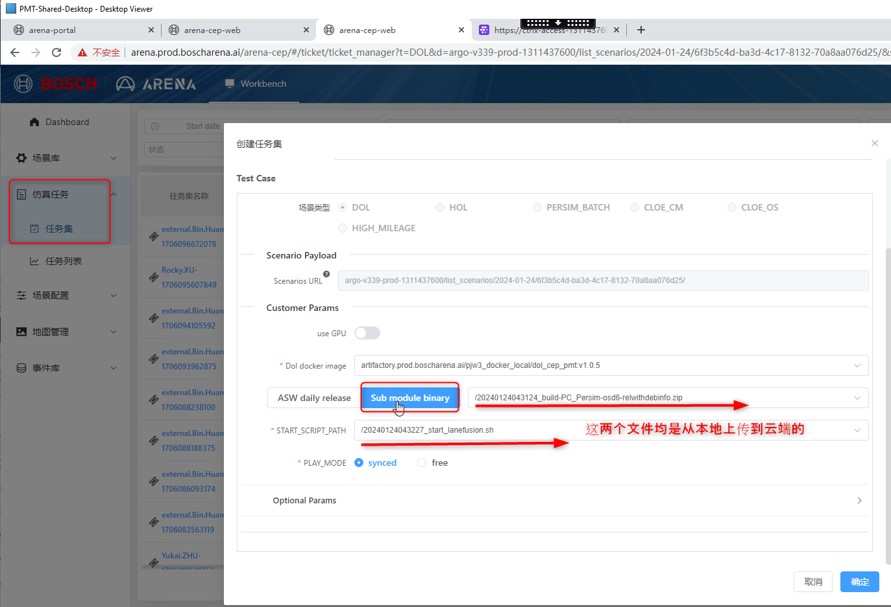
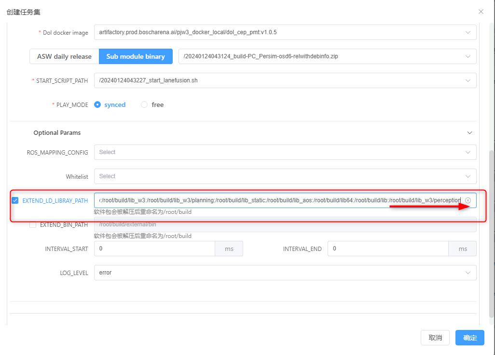
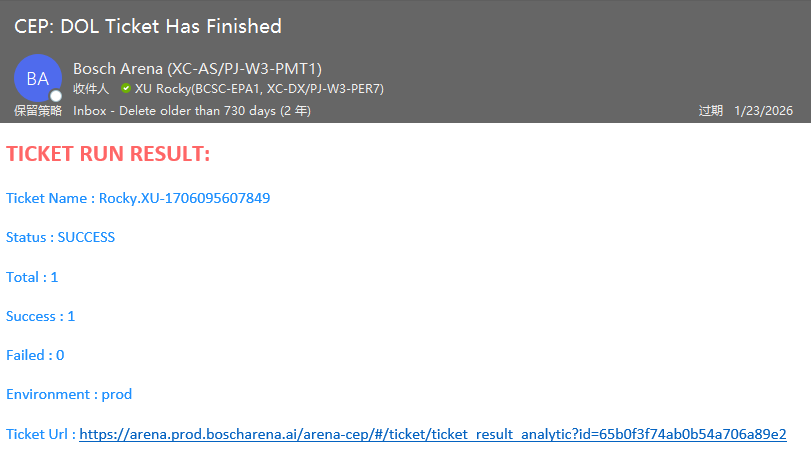

Guideline_ g g g g
background:
At present, a large number of tickets are based on the data on the cloud. When we analyze the data on the cloud, we often need to test whether the new software still has this problem, or whether the fixed software can solve the problem, so we introduce it to introduce it.Guideline on the cloud simulation data.
Steps:
1. File preparation:
Among them, the first script of the sf_dol, and the second is to pass the local file or software to the script of the directory on the corresponding cloud.

2. Put the necessary files to the cloud
Since the current PC DOL simulation on the cloud only provides only PC/DASY (ASW) software, no software for PC/Persim (with PER sub -module), so SF needs to manually upload software packages (Output that can run locally on the local area (Output can be running locallyClass software)
2.1 Pass the local software on the cloud:
./cep_uploader_v3.sh -u xro3sgh_t -f build-PC_Persim-osd6-relwithdebinfo.zip
2.2 Upload the script of sf_dol to the cloud:
./cep_uploader_v3.sh -u xro3sgh_t -f start_lanefusion.sh
3. Construction of simulation tasks on the cloud
https://arena.prod.boscharena.ai/arena-cep/#/incident/incident_list
3.1 Create DOL task based on INCIDENT data

3.2 Enter the scene library and create a simulation task

3.3 Simulation task specific parameters
3.3.1 Select the corresponding software and script

Note: The ASW DAILY on the left is a software that is automatically drawn every day as PC/DASY (ASW) software. It does not provide software for PC/Persim (with Per sub -module). Therefore, SF needs to manually upload software packages.
3.3.2 Add the corresponding library
Because SF depends on the module, you need to add ::/root/build/lib_w3/perception

4. Acceptance tasks
When you receive this email, the representative task is successful, you can look back at the corresponding ROSBAG check
